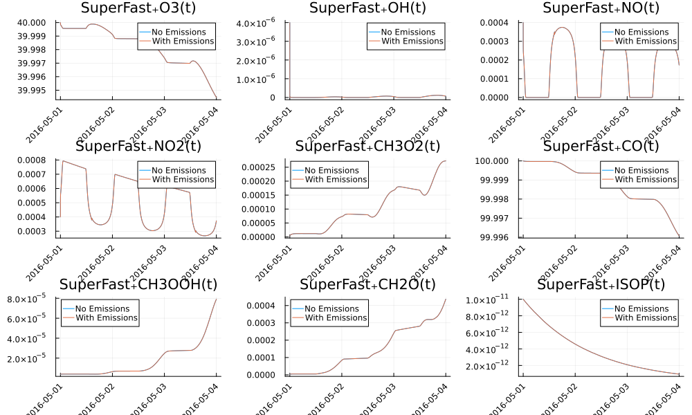

Composing Models
Illustrative Example
Here is the complete example of composing, visualizing and solving the SuperFast model and the Fast-JX model, with explanation to follow:
using EarthSciMLBase, GasChem, ModelingToolkit, Dates, DynamicQuantities,
OrdinaryDiffEqDefault, OrdinaryDiffEqRosenbrock
using ModelingToolkit: t
start = Dates.datetime2unix(Dates.DateTime(2024, 2, 29))
composed_ode = couple(SuperFast(), FastJX(start)) # Compose two models use the "couple" function
tspan = (0.0, 3600.0*24*3)
sys = convert(System, composed_ode) # Define the coupled system
sol = solve(ODEProblem(sys, [], tspan; build_initializeprob = false), Rosenbrock23(), saveat = 10.0) # Solve the coupled systemretcode: Success
Interpolation: 1st order linear
t: 25921-element Vector{Float64}:
0.0
10.0
20.0
30.0
40.0
50.0
60.0
70.0
80.0
90.0
⋮
259120.0
259130.0
259140.0
259150.0
259160.0
259170.0
259180.0
259190.0
259200.0
u: 25921-element Vector{Vector{Float64}}:
[0.0, 0.0, 0.0, 0.0, 0.1, 4.0e-6, 4.0e-6, 1.0e-11, 0.0, 0.05, 4.0e-6, 100.0, 4.0e-6, 4.0e-6, 0.0004, 0.0004, 4.0e-6, 4.0e-6, 40.0]
[0.0, 0.0, 0.0, 0.0, 0.1, 4.004706235478508e-6, 4.0000989017359515e-6, 9.99896874865354e-12, 0.0, 0.05, 4.000045598867769e-6, 99.99999705958038, 4.003801984441423e-6, 4.8848036127247385e-6, 0.000454126974056988, 0.00034586419733480494, 7.101305874914639e-6, 1.284726252076403e-8, 39.999945464266744]
[0.0, 0.0, 0.0, 0.0, 0.1, 4.009334593101357e-6, 4.000207502293113e-6, 9.998064745303206e-12, 0.0, 0.05, 4.000098451701562e-6, 99.99999696538633, 4.007182478941722e-6, 4.90983483079758e-6, 0.0005007166485587022, 0.00029926528839322456, 7.073529327278024e-6, 1.5237831092985784e-8, 39.99989873566683]
[0.0, 0.0, 0.0, 0.0, 0.1, 4.014374240443638e-6, 4.0003153152219305e-6, 9.997160750914479e-12, 0.0, 0.05, 4.000151438258946e-6, 99.99999686954305, 4.010132464766798e-6, 4.935794963069993e-6, 0.0005409534465433642, 0.0002590184353566789, 7.04831018717598e-6, 1.4141285437528462e-8, 39.99985835830997]
[0.0, 0.0, 0.0, 0.0, 0.1, 4.019781524541811e-6, 4.000422345256604e-6, 9.996256932656353e-12, 0.0, 0.05, 4.0002045400438104e-6, 99.99999677579396, 4.0126955704413045e-6, 4.961509012060003e-6, 0.0005754872917587636, 0.00022447380102974372, 7.021502868135419e-6, 1.4879263859860148e-8, 39.9998236828363]
[0.0, 0.0, 0.0, 0.0, 0.1, 4.025494059153753e-6, 4.000528600213113e-6, 9.995353198709875e-12, 0.0, 0.05, 4.000257798835327e-6, 99.99999668208636, 4.014935762126426e-6, 4.987533435240164e-6, 0.0006053520581001582, 0.00019459763662521838, 6.995321829872535e-6, 1.468026764765593e-8, 39.99979367547778]
[0.0, 0.0, 0.0, 0.0, 0.1, 4.031480719101551e-6, 4.0006340456180994e-6, 9.994449577978517e-12, 0.0, 0.05, 4.0003111114406196e-6, 99.99999658907026, 4.016885466393049e-6, 5.013639248586889e-6, 0.0006309248172203061, 0.00016901293225431396, 6.969034881872659e-6, 1.4506281676252237e-8, 39.99976795937198]
[0.0, 0.0, 0.0, 0.0, 0.1, 4.037683899881878e-6, 4.000738727195506e-6, 9.99354606869017e-12, 0.0, 0.05, 4.000364598272119e-6, 99.99999649670912, 4.018602809215982e-6, 5.0397795117342254e-6, 0.0006532331824730576, 0.00014669218950073975, 6.94264098669661e-6, 1.4405214232306398e-8, 39.99974550717725]
[0.0, 0.0, 0.0, 0.0, 0.1, 4.044102827437191e-6, 4.000842619323936e-6, 9.992642669825942e-12, 0.0, 0.05, 4.000418188117995e-6, 99.99999640498027, 4.0200889411577974e-6, 5.065959837616406e-6, 0.0006722120765398247, 0.00012770048724443963, 6.916165916608895e-6, 1.4345862109003716e-8, 39.999726383972565]
[0.0, 0.0, 0.0, 0.0, 0.1, 4.050683982585995e-6, 4.000945721420131e-6, 9.991739376429308e-12, 0.0, 0.05, 4.000471862289249e-6, 99.99999631377614, 4.021399687734882e-6, 5.092156909360769e-6, 0.0006886857920183231, 0.00011121363970253025, 6.889693547236701e-6, 1.4267921365566869e-8, 39.999709765709746]
⋮
[0.0, 0.0, 0.0, 0.0, 0.1, 0.00013883076907026274, 6.10813486162913e-6, 9.639731968804909e-13, 0.0, 0.05, 1.3906616166887146e-5, 99.99865001744473, 0.0001806456977706577, 0.00012095072989919161, 0.0005127929654080816, 1.779813592845288e-5, 7.346373771986092e-6, 1.5029716030137186e-8, 39.997845207587424]
[0.0, 0.0, 0.0, 0.0, 0.1, 0.00013883574631827912, 6.108256545647499e-6, 9.638860419687134e-13, 0.0, 0.05, 1.3907995710556308e-5, 99.99864992197463, 0.00018065272555895624, 0.00012097104184297406, 0.0005137656164179561, 1.6815554335079705e-5, 7.321315924376643e-6, 1.4978780827738722e-8, 39.99784408671905]
[0.0, 0.0, 0.0, 0.0, 0.1, 0.00013884072807604435, 6.1083772450005355e-6, 9.637988963812898e-13, 0.0, 0.05, 1.3909370892765105e-5, 99.99864982683334, 0.00018065962924275535, 0.00012099138279705693, 0.0005146750061403911, 1.5896224947989562e-5, 7.296239710643445e-6, 1.4927492752889682e-8, 39.99784302945331]
[0.0, 0.0, 0.0, 0.0, 0.1, 0.00013884571138276833, 6.108491078906014e-6, 9.637117607298868e-13, 0.0, 0.05, 1.391074063748635e-5, 99.99864973219121, 0.0001806663584870327, 0.00012101164247493545, 0.0005147463370776603, 1.5814951245206832e-5, 7.271275788540539e-6, 1.4873754268332051e-8, 39.9978428106777]
[0.0, 0.0, 0.0, 0.0, 0.1, 0.00013885069753327847, 6.1086042103636085e-6, 9.636246343715471e-13, 0.0, 0.05, 1.3912106398246425e-5, 99.99864963785845, 0.000180673027700264, 0.00012103188645777124, 0.0005148955592007739, 1.565578060021043e-5, 7.2463355493903785e-6, 1.4820729077656759e-8, 39.99784251440432]
[0.0, 0.0, 0.0, 0.0, 0.1, 0.0001388556865275748, 6.108716639373318e-6, 9.635375173062709e-13, 0.0, 0.05, 1.3913468175045327e-5, 99.99864954383506, 0.00018067963688244923, 0.00012105211474556433, 0.0005151226725097316, 1.541871301300035e-5, 7.221418993192964e-6, 1.4768417180863806e-8, 39.997842140633146]
[0.0, 0.0, 0.0, 0.0, 0.1, 0.00013886067836565728, 6.108828365935144e-6, 9.634504095340578e-13, 0.0, 0.05, 1.3914825967883057e-5, 99.99864945012104, 0.00018068618603358835, 0.0001210723273383147, 0.0005154276770045336, 1.5103748483576599e-5, 7.196526119948296e-6, 1.4716818577953192e-8, 39.99784168936419]
[0.0, 0.0, 0.0, 0.0, 0.1, 0.00013886567304752595, 6.108939390049086e-6, 9.633633110549081e-13, 0.0, 0.05, 1.3916179776759618e-5, 99.99864935671637, 0.0001806926751536814, 0.00012109252423602233, 0.0005158105726851799, 1.4710887011939173e-5, 7.171656929656374e-6, 1.4665933268924918e-8, 39.99784116059746]
[0.0, 0.0, 0.0, 0.0, 0.1, 0.00013887067057318078, 6.109049711715142e-6, 9.632762218688218e-13, 0.0, 0.05, 1.3917529601675007e-5, 99.99864926362109, 0.00018069910424272834, 0.00012111270543868727, 0.0005162713595516703, 1.4240128598088073e-5, 7.146811422317198e-6, 1.4615761253778984e-8, 39.99784055433294]In the composed system, the variable name for O₃ is not O3 but superfast₊O3(t). So we need some preparation of the result before visualizing.
vars = unknowns(sys) # Get the variables in the composed system
var_dict = Dict(string(var) => var for var in vars)
pols = ["O3", "OH", "NO", "NO2", "CH3O2", "CO", "CH3OOH", "CH2O", "ISOP"]
var_names_p = ["SuperFast₊$(v)(t)" for v in pols]
x_t = unix2datetime.(sol[t] .+ start) # Convert from unixtime to date time for visualizing25921-element Vector{Dates.DateTime}:
2024-02-29T00:00:00
2024-02-29T00:00:10
2024-02-29T00:00:20
2024-02-29T00:00:30
2024-02-29T00:00:40
2024-02-29T00:00:50
2024-02-29T00:01:00
2024-02-29T00:01:10
2024-02-29T00:01:20
2024-02-29T00:01:30
⋮
2024-03-02T23:58:40
2024-03-02T23:58:50
2024-03-02T23:59:00
2024-03-02T23:59:10
2024-03-02T23:59:20
2024-03-02T23:59:30
2024-03-02T23:59:40
2024-03-02T23:59:50
2024-03-03T00:00:00Then, we could plot the results as:
using Plots
pp = []
for (i, v) in enumerate(var_names_p)
name = pols[i]
push!(pp,
Plots.plot(
x_t, sol[var_dict[v]], label = "$name", size = (1000, 600), xrotation = 45))
end
Plots.plot(pp..., layout = (3, 3))
Adding Emission Data
GasChem.jl incorporates an emissions model that utilizes data from the US National Emissions Inventory for the year 2016. This model is activated as an extension when the EarthSciData package is used. Here's a simple example:
using GasChem, EarthSciData # This will trigger the emission extension
using Dates, ModelingToolkit, OrdinaryDiffEqDefault, OrdinaryDiffEqRosenbrock,
EarthSciMLBase
using Plots, DynamicQuantities
using ModelingToolkit: t
domain = DomainInfo(
Dates.DateTime(2016, 5, 1), Dates.DateTime(2016, 5, 4);
lonrange = deg2rad(-129):deg2rad(1):deg2rad(-61),
latrange = deg2rad(11):deg2rad(1):deg2rad(59),
levrange = 1:1:3)
emis = NEI2016MonthlyEmis("mrggrid_withbeis_withrwc", domain)
model_noemis = couple(SuperFast(), FastJX(get_tref(domain))) # A model with chemistry and photolysis, but no emissions.
model_withemis = couple(SuperFast(), FastJX(get_tref(domain)), emis) # The same model with emissions.
sys_noemis = convert(System, model_noemis)
sys_withemis = convert(System, model_withemis)
tspan = EarthSciMLBase.get_tspan(domain)
sol_noemis = solve(ODEProblem(sys_noemis, [], tspan; build_initializeprob = false), Rosenbrock23())
sol_withemis = solve(ODEProblem(sys_withemis, [], tspan; build_initializeprob = false), Rosenbrock23())
vars = unknowns(sys_noemis) # Get the variables in the composed system
var_dict = Dict(string(var) => var for var in vars)
pols = ["O3", "OH", "NO", "NO2", "CH3O2", "CO", "CH3OOH", "CH2O", "ISOP"]
var_names_p = ["SuperFast₊$(v)(t)" for v in pols]
pp = []
for (i, v) in enumerate(var_names_p)
p = plot(unix2datetime.(sol_noemis[t] .+ get_tref(domain)), sol_noemis[var_dict[v]],
label = "No Emissions", title = v,
size = (1000, 600), xrotation = 45)
plot!(unix2datetime.(sol_withemis[t] .+ get_tref(domain)),
sol_withemis[var_dict[v]], label = "With Emissions")
push!(pp, p)
end
Plots.plot(pp..., layout = (3, 3))